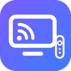
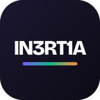
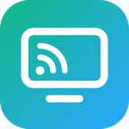
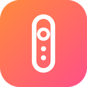
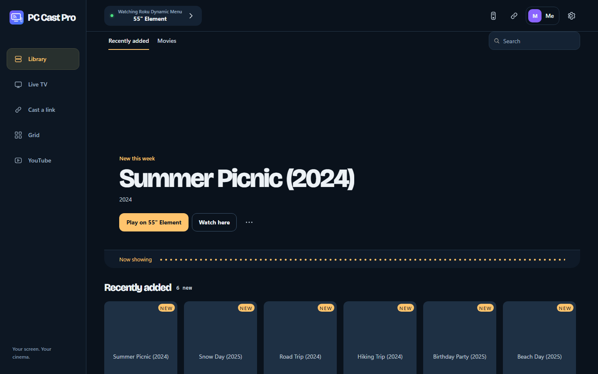
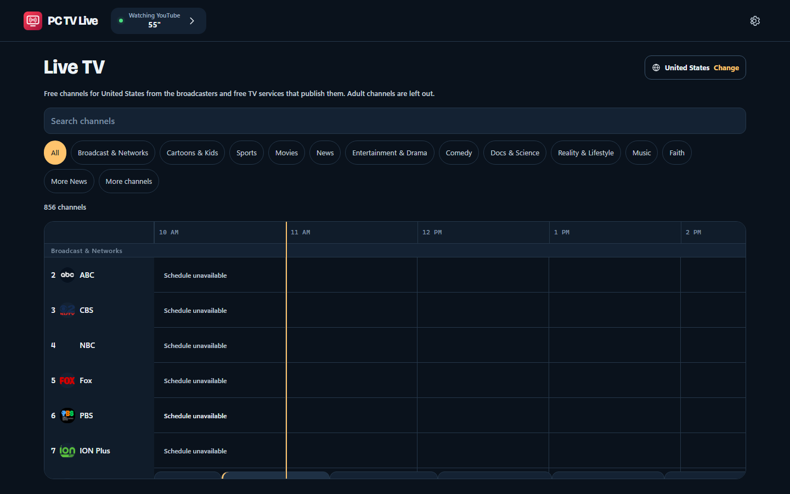

PC Cast Pro
The whole package: your TVs' remote, casting from any link, multicast to many TVs, your PC's video library, multi-screen grids and free live TV.

IN3RT1AFour free apps that play your PC's videos, any link you paste and free live TV on the TVs you already own.
PC Cast Pro has the full desktop toolkit; the others each do one job. Live and Remote also have standalone mobile beta versions below.

The whole package: your TVs' remote, casting from any link, multicast to many TVs, your PC's video library, multi-screen grids and free live TV.

Just the casting. Paste a link and it plays on one TV or several, in the best quality the page offers.
Pro and Lite require a computer. No standalone mobile versions are offered.
Just free live TV. Pick your country and get its free, legal channels with a full guide.
Mobile beta: a smaller selection of direct live channels, search and favorites. No PC required; no desktop program guide or TV casting engine.

Just the remote for your TVs, on your PC or your phone, in the smallest download.
Android beta connects directly to your TVs over Wi-Fi. No PC required. TV compatibility still needs real-device testing; no iPhone web remote is offered.
Portable ZIPs, SHA-256 checksums and third-party source code are on the latest release.
Mobile: Android 7+ phones and tablets (Remote requires a 64-bit device). Download the APK, then allow installation from your browser if Android asks. On iPhone, open Live in Safari and choose Share → Add to Home Screen. Live needs internet; Remote needs the same Wi-Fi as your TV. Read the mobile beta notes and checksums.
For Windows and Linux downloads, keep the computer on and awake, on the same network as your TVs. The mobile versions above run without a PC.
Pick an app above. On Windows it's one Setup file; on Linux, one tar.gz for x86_64 (Ubuntu 22.04, Debian 12 or newer).
Click Install, no administrator rights needed. On Linux, run ./install.sh, or add --service to start it at boot.
TVs on your network are found for you, and the app walks you through any pairing or one-time TV setup.
The builds aren't code-signed yet, so Windows SmartScreen may warn you. Click More info, then Run anyway. The checksums on each release let you confirm a file.
The same app runs on your PC and on your phone's browser, so the remote is always in your pocket.


No ads, no account and nothing to buy. If an app saves you a streaming box or a subscription, a donation of any amount from $1 helps keep it that way.